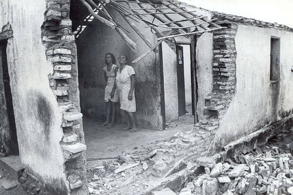

Sobre o Projeto
Este site foi desenvolvido como parte de um Projeto Integrador do Curso Técnico em Informática, com o objetivo de unir tecnologia e conhecimento científico por meio da criação de um ambiente digital educativo. O tema escolhido aborda os abalos sísmicos ocorridos em 1986 na cidade de João Câmara (RN), um dos eventos geológicos mais significativos já registrados no Brasil. A escolha desse tema se justifica tanto por sua relevância científica quanto por sua importância histórica e social para a região onde o projeto está inserido.

Objetivo do Site
O principal objetivo deste site é apresentar, de forma clara e acessível, informações científicas sobre os abalos sísmicos de João Câmara, relacionando o fenômeno a conteúdos estudados no Ensino Médio, especialmente nas disciplinas de Geografia e Física. Além disso, o site busca:
- Valorizar a história local.
- Incentivar o interesse pela ciência.
- Incentivar o interesse pela ciência.